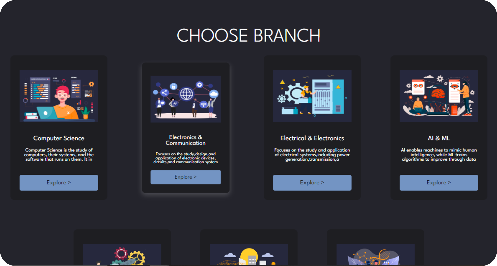
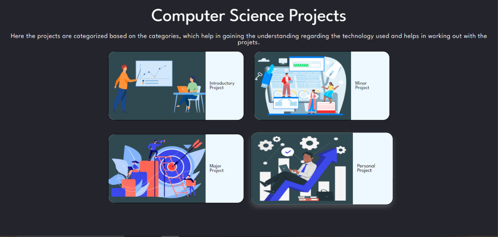

Bridging Generation in Project Selection
Explore project ideas organized by academic branches. Each branch offers unique projects tailored to specific disciplines. Easily navigate through and find inspiration or explore completed projects within your field.
Project X helps you categorize projects by level, from introductory to major. It provides specific information tailored to the level you choose, ranging from surface-level insights to in-depth knowledge.
